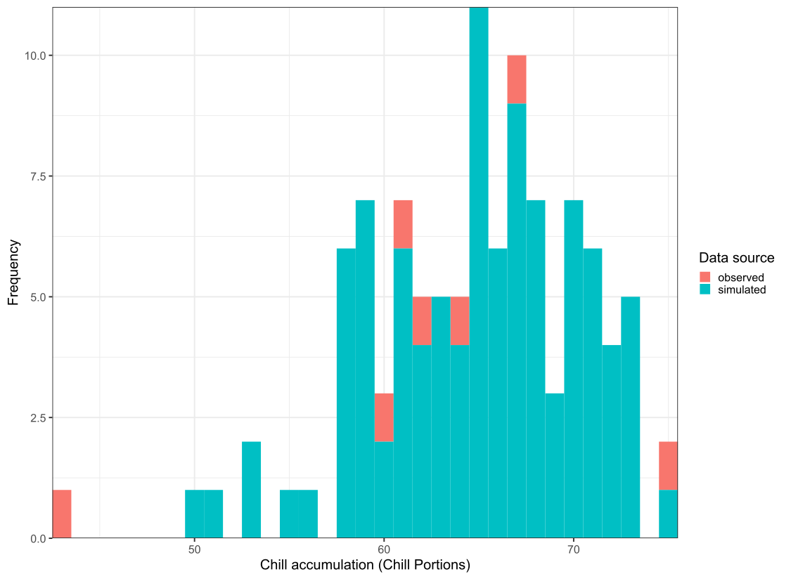
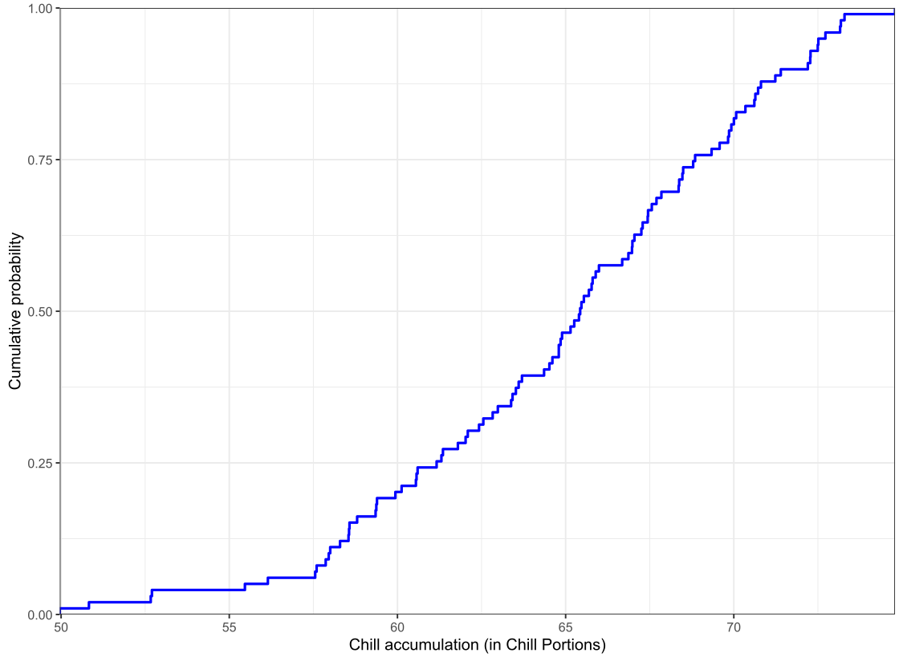

12 Chapter 12 - Generating temperature scenarios
12.1 Questions
For the location you chose for your earlier analyses, use chillR’s weather generator to produce 100 years of synthetic temperature data.
Calculate winter chill (in Chill Portions) for your synthetic weather, and illustrate your results as histograms and cumulative distributions.
Produce similar plots for the number of freezing hours (<0°C) in April (or October, if your site is in the Southern Hemisphere) for your location of interest.
12.2 Answers
1. Using the synthetic temperature data
First we need to get our future weather data simulated. For my code look at the codes section!
2. Chill

Figure 12.1: Distribution of chill in Klagenfurt, Austria between 1998 and 2005.

Figure 12.2: Simulation for the chilling hours in Klagenfurt, Austria between 1998 and 2005.
12.3 Codes
Code for exercise 1:
Code
library(tidyverse)
library(chillR)
KL_weather <- read.csv2("data/Klagenfurt_temps.csv")[
, c("Year", "Month", "Day", "Tmax", "Tmin")
]
Temp <- KL_weather %>%
temperature_generation(years=c(1998,2005),
sim_years = c(2001,2100))
Temperatures <- KL_weather %>% filter(Year %in% 1998:2005) %>%
cbind(Data_source="observed") %>%
rbind(
Temp[[1]] %>% select(c(Year,Month,Day,Tmin,Tmax)) %>%
cbind(Data_source="simulated")
) %>%
mutate(Date=as.Date(ISOdate(2000,Month,Day)))
chill_observed <- Temperatures %>%
filter(Data_source == "observed") %>%
stack_hourly_temps(latitude = 46.62) %>%
chilling(Start_JDay = 305,
End_JDay = 59)
chill_simulated <- Temperatures %>%
filter(Data_source == "simulated") %>%
stack_hourly_temps(latitude = 46.62) %>%
chilling(Start_JDay = 305,
End_JDay = 59)
chill_comparison <-
cbind(chill_observed,
Data_source = "observed") %>%
rbind(cbind(chill_simulated,
Data_source = "simulated"))
chill_comparison_full_seasons <-
chill_comparison %>%
filter(Perc_complete == 100)Code for the whole chapter:
Code
library(tidyverse)
library(chillR)
KL_weather <- read.csv2("data/Klagenfurt_temps.csv")[
, c("Year", "Month", "Day", "Tmax", "Tmin")
]
Temp <- KL_weather %>%
temperature_generation(years=c(1998,2005),
sim_years = c(2001,2100))
Temperatures <- KL_weather %>% filter(Year %in% 1998:2005) %>%
cbind(Data_source="observed") %>%
rbind(
Temp[[1]] %>% select(c(Year,Month,Day,Tmin,Tmax)) %>%
cbind(Data_source="simulated")
) %>%
mutate(Date=as.Date(ISOdate(2000,Month,Day)))
# Plot it
ggplot(data=Temperatures,
aes(Date,Tmin)) +
geom_smooth(aes(colour = factor(Year))) +
facet_wrap(vars(Data_source)) +
theme_bw(base_size = 20) +
theme(legend.position = "none") +
scale_x_date(date_labels = "%b")
# Simulating
chill_observed <- Temperatures %>%
filter(Data_source == "observed") %>%
stack_hourly_temps(latitude = 46.62) %>%
chilling(Start_JDay = 305,
End_JDay = 59)
chill_simulated <- Temperatures %>%
filter(Data_source == "simulated") %>%
stack_hourly_temps(latitude = 46.62) %>%
chilling(Start_JDay = 305,
End_JDay = 59)
chill_comparison <-
cbind(chill_observed,
Data_source = "observed") %>%
rbind(cbind(chill_simulated,
Data_source = "simulated"))
chill_comparison_full_seasons <-
chill_comparison %>%
filter(Perc_complete == 100)
# Plot the simulated data
ggplot(chill_comparison_full_seasons,
aes(x=Chill_portions)) +
geom_histogram(binwidth = 1,
aes(fill = factor(Data_source))) +
theme_bw(base_size = 20) +
labs(fill = "Data source") +
xlab("Chill accumulation (Chill Portions)") +
scale_x_continuous(expand = c(0,0)) +
scale_y_continuous(expand = c(0,0)) +
ylab("Frequency")
# Plot for Cumulative probability
chill_simulations <-
chill_comparison_full_seasons %>%
filter(Data_source == "simulated")
ggplot(chill_simulations,
aes(x = Chill_portions)) +
stat_ecdf(geom = "step",
lwd = 1.5,
col = "blue") +
ylab("Cumulative probability") +
xlab("Chill accumulation (in Chill Portions)") +
scale_x_continuous(expand = c(0,0)) +
scale_y_continuous(expand = c(0,0)) +
theme_bw(base_size = 20)
## Same for freeezing
# Simulating
sos <- stack_hourly_temps(Temperatures, latitude = 46.62)
write.csv(sos, "data/sos.csv", row.names = FALSE)
sos <- read.csv("data/sos.csv")
sos <- sos %>%
rename_with(~ gsub("^hourtemps\\.", "", .x))
# Selecting April
freeze_comparison <- sos %>%
filter(Month == 4) %>%
mutate(freezing = Temp < 0) %>%
group_by(Year, Data_source) %>%
summarise(
Freezing_hours = sum(freezing, na.rm = TRUE),
Hours_available = sum(!is.na(Temp)),
Perc_complete = 100 * Hours_available / (30 * 24),
.groups = "drop"
)
# all data?
freeze_comparison_full_months <- freeze_comparison %>%
filter(Perc_complete == 100)
# Plot the simulated data
ggplot(freeze_comparison_full_months,
aes(x = Freezing_hours)) +
geom_histogram(binwidth = 10,
aes(fill = factor(Data_source))) +
theme_bw(base_size = 20) +
labs(fill = "Data source") +
xlab("April freezing hours (Temp < 0°C)") +
scale_x_continuous(expand = c(0,0)) +
scale_y_continuous(expand = c(0,0)) +
ylab("Frequency")
# Plot for Cumulative probability
freeze_simulations <- freeze_comparison_full_months %>%
filter(Data_source == "simulated")
ggplot(freeze_simulations, aes(x = Freezing_hours)) +
stat_ecdf(geom = "step", lwd = 1.5, col = "blue") +
ylab("Cumulative probability") +
xlab("Freezing hours in April (Temp < 0°C)") +
scale_x_continuous(expand = c(0,0)) +
scale_y_continuous(expand = c(0,0)) +
theme_bw(base_size = 20)
# nice plot
freeze_plot_data <- freeze_comparison_full_months %>%
filter(Data_source == "simulated") %>%
mutate(
Period = case_when(
Year >= 1998 & Year <= 2010 ~ "2000",
Year >= 2011 & Year <= 2029 ~ "2020",
Year >= 2030 & Year <= 2049 ~ "2040",
Year >= 2050 & Year <= 2069 ~ "2060",
Year >= 2070 & Year <= 2089 ~ "2080",
Year >= 2090 & Year <= 2100 ~ "2100",
TRUE ~ NA_character_
)
) %>%
filter(!is.na(Period))
ggplot(freeze_plot_data,
aes(x = Period, y = Freezing_hours)) +
# Boxplots
geom_boxplot(fill = "grey85",
color = "black",
outlier.shape = NA,
width = 0.6) +
# Einzeljahre (Punkte)
geom_jitter(width = 0.15,
size = 2,
alpha = 0.9,
color = "black") +
theme_bw(base_size = 18) +
xlab("Year") +
ylab("April freezing hours (<0°C)")